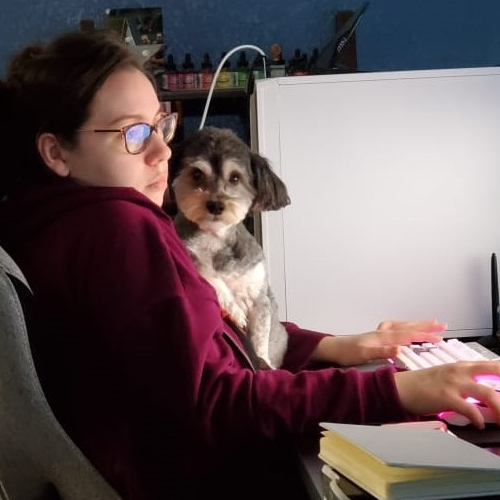
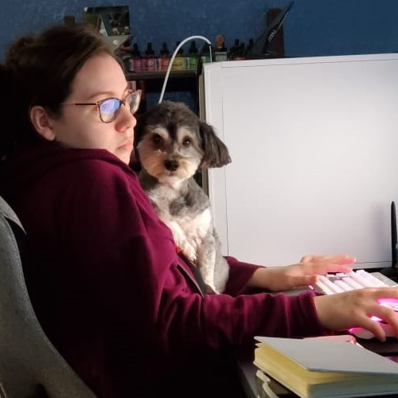

About the Artist

Danielle Van Allen is an avid reader, painter, sketchbook hoarder, and a great dog-mom.
Danielle Van Allen is creating beautiful artistic designs with creativity, originality, and a personal touch.

Danielle Van Allen is an avid reader, painter, sketchbook hoarder, and a great dog-mom.